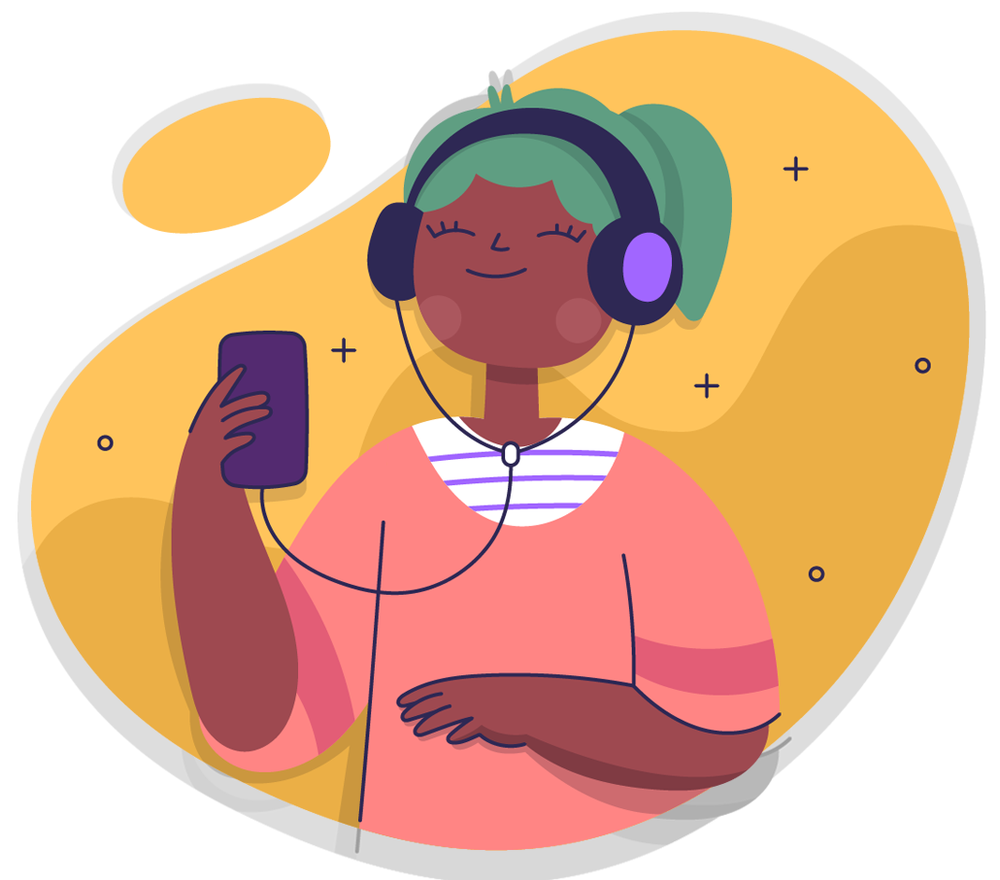
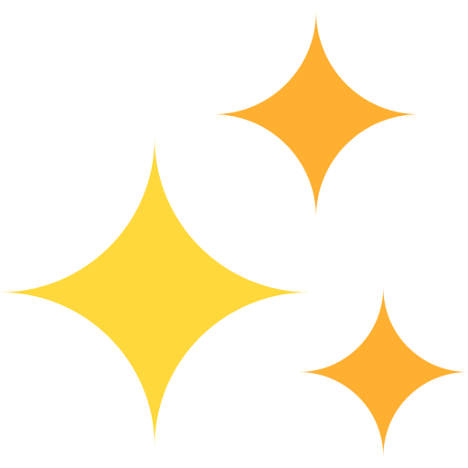
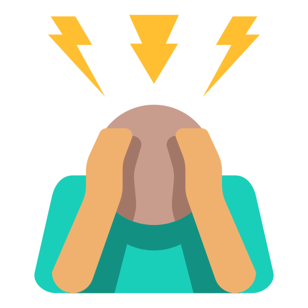
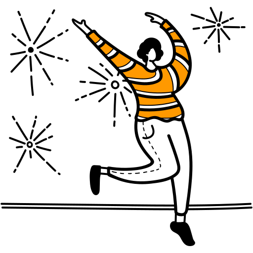
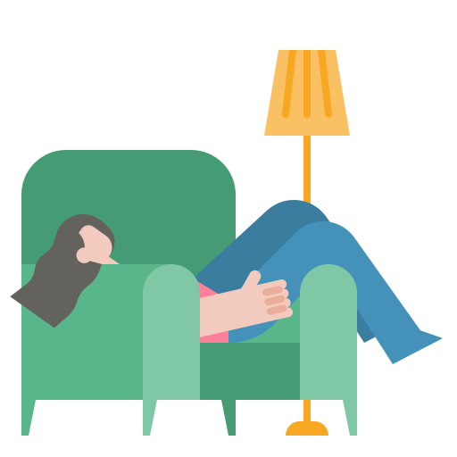
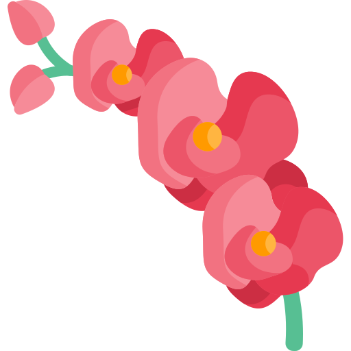
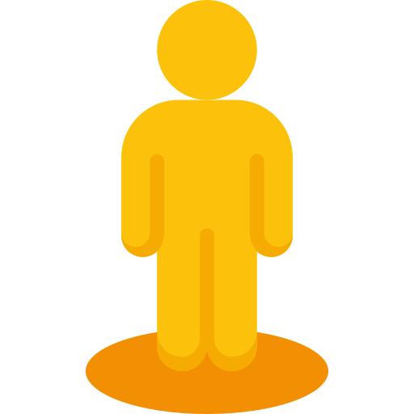
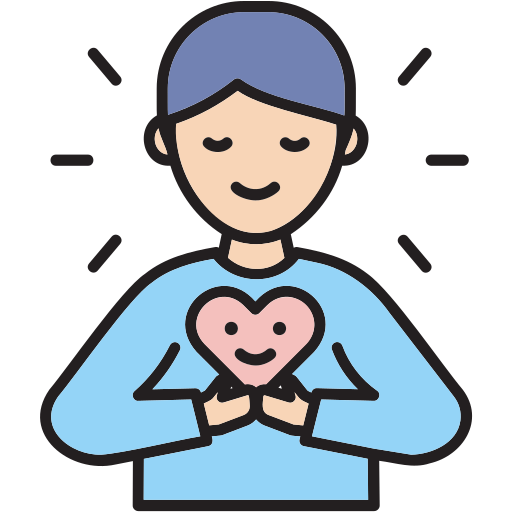

الموارد الصوتية
استمع لمقاطع صوتية قصيرة تساعدك على التهدئة، التخلص من القلق، وتنمية التفكير الإيجابي

مقاطع صوتية للاسترخاء والتحفيز النفسي
استمع لهذه المقاطع في أي وقت تحتاج فيه للهدوء والطمأنينة
هدوء الأعصاب
جلسة قصيرة تساعدك على تهدئة التوتر والرجوع للراحة النفسية.

تراكمات
حلقة خفيفة لتنظيم أفكارك وتخفيف ضغط اليوم.

القلق المفرط
جلسة تساعدك على تهدئة القلق وإعادة التركيز الذهني.

البدايات الجديدة
لقة خفيفة بتحكي عن معنى البدء من جديد، وتهدّي القلق اللي جوّاك، وترجّعلك شعور الأمل خطوة خطوة.

كيف تحقق الهدوء النفسي والسلام الداخلي؟
حلقة ناعمة بتعلّمك خطوات بسيطة لتهدئة القلق، تهوية بالك، واسترجاع إحساس السلام الداخلي بطريقة هادئة ومطمئنة.

كيف تتخلص من التفكير الزائد والقلق؟
حلقة قصيرة تساعدك توقف دوامة التفكير، تهدّي قلقك، وترجع تسيطري على بالك بخطوات بسيطة ومريحة.
ما فاتك شي
حلقة هادئة تطمّنك إنك ما تأخرت على شيء، وإن كل إشي إله وقته المناسب… كلام بسيط يخفّف عليك ويهدي بالك.

التشافي الذاتي
حلقة تساعدك تفهمي خطوات التشافي بهدوء، وكيف تبدأي ترميم نفسك من جوّا بطريقة لطيفة وواقعية

هل هذه النهاية؟
حلقة هادئة تطمّنك إن النهاية أحيانًا تكون بداية جديدة، وتهدي بالك بكلام بسيط ويدفي القلب

أنا أشعر
حلقة خفيفة بتساعدك تفهمي مشاعرك وتسمّيها، وتهدّي داخلك بكلام بسيط ويريّح القلب

كيف نقاوم الانجراف؟
حلقة قصيرة بتساعدك ترجعي تَركّزي على ذاتك، وتقاومي الانسياق وراء الضغط والفوضى بخطوات هادئة وواضحة
مُحترف الخسارة
حلقة رايقة بتحكي عن التعايش مع الخسائر، وكيف نتعامل معها بدون جلد، وبهدوء يساعدنا نكمّل الطريق